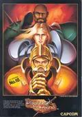

R hace ahora el ataque fuerte (antes en L, que queda libre; cambio del 2026-11-19, petición del usuario). Comprobarlo, y que en la lista de FBA solo salga un JoJo.
Dudas para mirar jugando (1)
⚠️ El final depende del personaje: se ve uno, el de Jotaro, en el vídeo de «Vídeos».
Botones
Saltar
Invocar o retirar el Stand
Dar otro ataque (distinto de los de Y, X y R)
Atacar fuerte ⚠️
Atacar flojo
Atacar medio
Empezar
Meter una moneda
+
Salir del juego
8

Knights of the Round
Que con Coin pueda empezar también el J2 con 2P (monedas comunes desde el 2026-11-19).
si se pueden coger y usar objetos (¿con X?) y si Y hace algo.
Dudas para mirar jugando (2)
Botones: cuatro. Probados en la bartop B (atacar), A (saltar, subir y bajar del caballo) y B y enseguida A (ataque especial); ⚠️ X e Y, por confirmar (ver la tabla de controles).
⚠️ Sin datos en las fuentes consultadas.
Botones
Atacar
y enseguida
Dar un ataque especial
Saltar · cerca de un caballo: subirse · montado: bajarse
Elegir y usar objeto ⚠️
Empezar
Meter una moneda
+
Salir del juego
10
Mercs
Que con Coin pueda empezar también el J2 con 2P (monedas comunes desde el 2026-11-19).
Dudas para mirar jugando (1)
¿A dos se juega a la vez o por turnos? (para la línea «A dos» de la ficha)
🔁 Pasado de MAME 2003 a FinalBurn Neo el 2026-11-17: comprobar que arranca, la velocidad, el sonido y los botones de la tabla; el botón 3 del juego pasa a R.